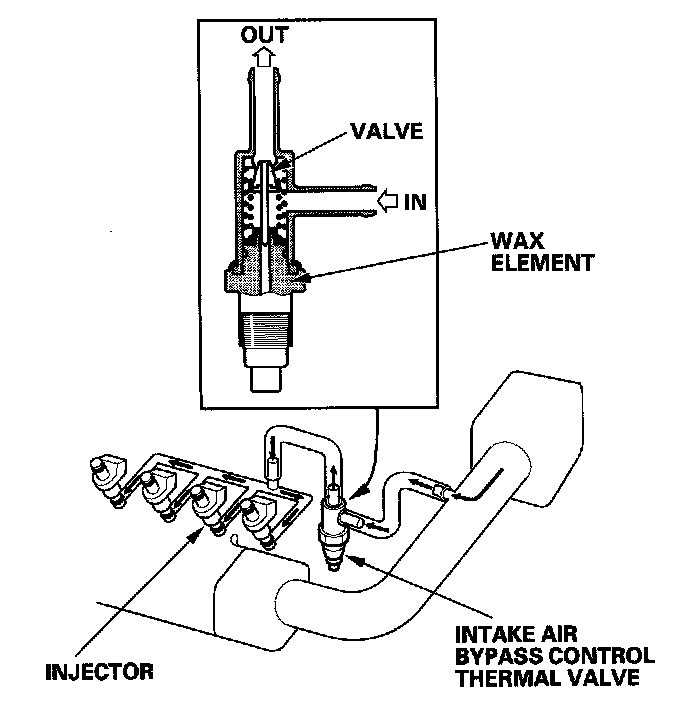

Intake Air System
Intake Air SystemThis system supplies air for engine needs.

Intake Air Bypass Control Thermal Valve
When the engine is cold, the intake air bypass control thermal valve sends air to the injector. The amount of air is regulated by engine coolant temperature. Once the engine is hot, the intake air bypass control thermal valve closes, stopping air to the injector.